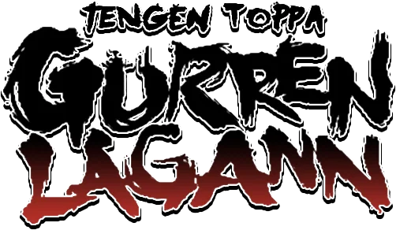
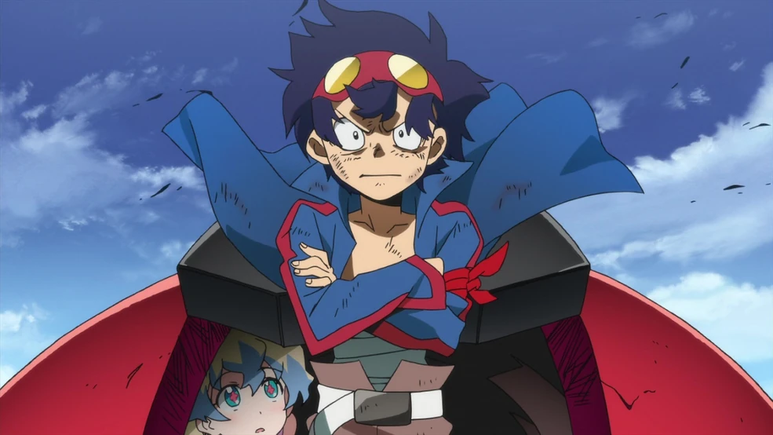
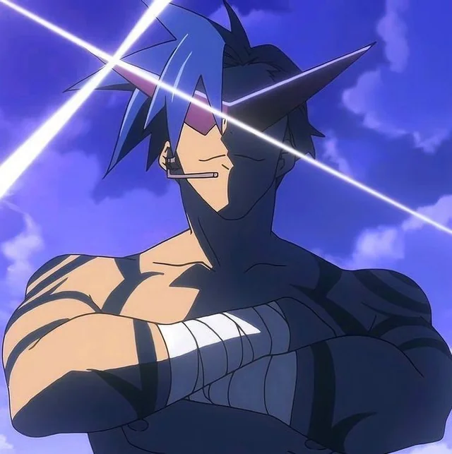
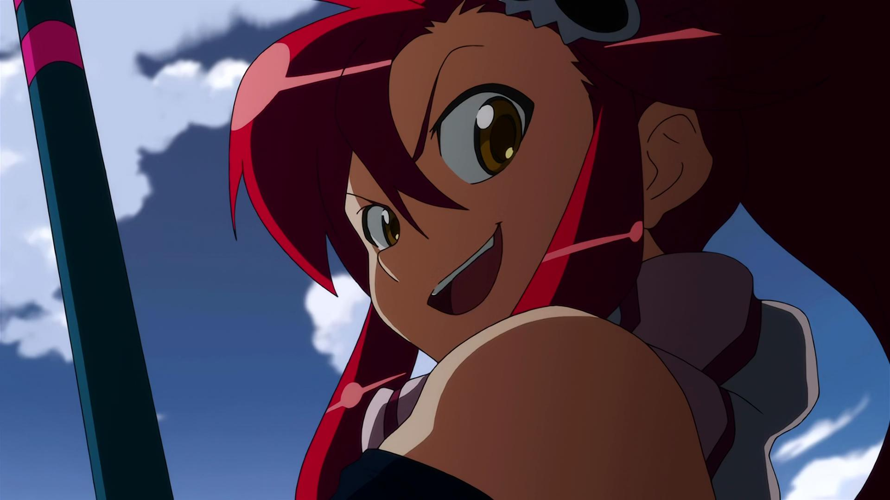
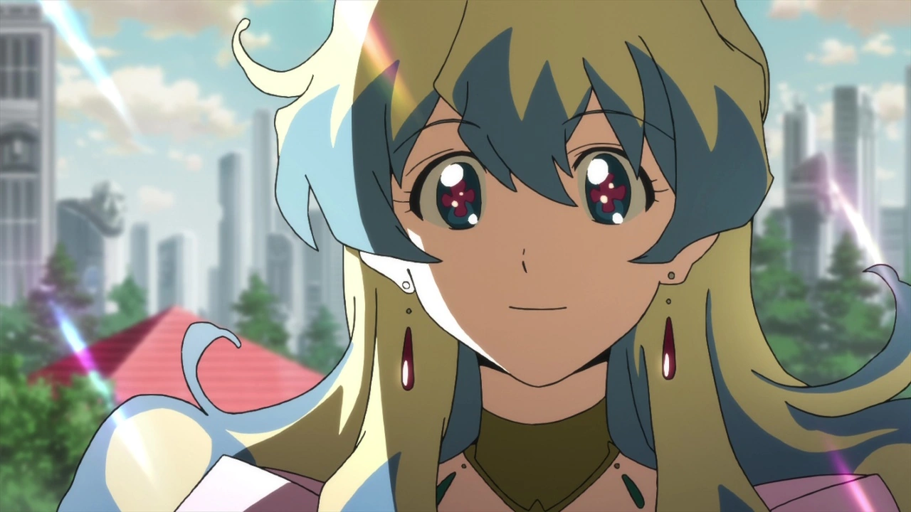

Tengen Toppa Gurren Lagann sigue la historia de Simon "the digger", un chico que vive en una aldea subterranea
con su hermano adoptivo Kamina. Mientras que Simon encuentra un mecha que Kamina lo llama lagann, Kamina tiene
el sueño de salir a la superficie para ver las estrellas, que es casi imposible por que el lider de su aldea no
lo permite.
Es un día que una joven llamada Yoko llega y con ella se tienen que enfrentar a un hombre bestia, seres que
controlan la superficie y pilotan mechas conocidos como Gunmen. Ahora Simon y Kamina con lagann y con un Gunmen
robado que nombraron Gurren deben aprender a pilotarlos para poder unirse a la rebelión de humanos que intentan
liberarse del control de los hombres bestia.
Mientras avanza la historia, esta lucha deja de ser por escapar del subterraneo, si no que ahora será una lucha
por el destino de la humanidad y de superar los limintes que parece imponer el destino.
Esta es una seríe de mechas, acción y ciencia ficción, conocida por siempre llevar sus desafios a limites inimaginables
y para hacer lo imposible, tratando temas como la determinación, la superación personal de los propios limites y
la amistad.
| Personajes de Gurren Lagann | ||
|---|---|---|
| Personaje | Imagen | Impacto en la serie |
| Simon |  |
Un joven excavador que vive bajo tierra. Al principio es tímido e inseguro, pero a lo largo de la historia desarrolla una enorme confianza y determinación. Es el piloto de Lagann y uno de los personajes que más evoluciona durante la serie. |
| Kamina |  |
Un joven decidido y carismático que sueña con llegar a la superficie. Su enorme confianza y espíritu de lucha inspiran a quienes lo rodean. Pilota Gurren y se convierte en una figura fundamental para Simon. |
| Yoko |  |
Una hábil combatiente proveniente de la superficie. Es inteligente, valiente y experta utilizando armas de fuego. Se une a Simon y Kamina en su lucha contra los enemigos que dominan el mundo. |
| Nia |  |
Una joven misteriosa que Simon encuentra durante su aventura. Es amable, optimista y tiene una gran importancia en el desarrollo de la historia y de Simon. |
Para mí, esta seríe dejó un gran impacto en mi vida y en la forma en quiero vivirla. Esto es debido a que uno de los
pilares de la seríe es la determinación y la capacidad de superarse cada día.
Unos de los personajes que más lo simboliza dentro de la seríe es Kamina, ya que el impacto que genera en los
personajes de la seríe es impresionante y tambien motiva constantemente al espectador.
Mientras veía la serie me dí cuenta
que nosotros siempre necesitamos en nuestra vida un Kamina, una persona que nos lleve adelante sin importar el
desafío y nos motive a ser mejores cada día.
Dejo esto como una reflexión personal y recomiendo que toda persona que tenga la oportunidad de ver esta serie al menos una vez en su vida
lo haga. Para mí, es una de las mejores experiencias que uno puede vivir.